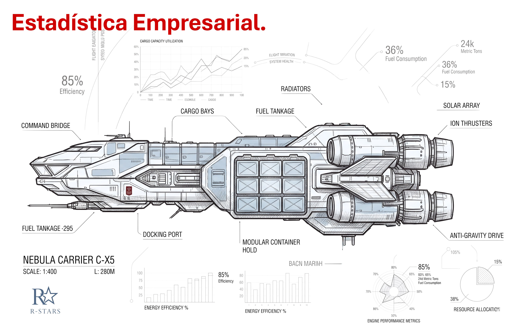

Skip to main content
Estadística Empresarial
Show table of contents
Table of contents
Prefacio
1
Estadística Económica y Empresarial.
2
Variable estadística unidimensional.
3
Variable estadística bidimensional y n-dimensional.
4
Regresión y correlación.
5
Números índice.
6
Probabilidad.
7
Variables aleatorias.
8
Modelos de probabilidad discretos univariantes.
9
Modelos de probabilidad continuos univariantes.
10
Convergencia y teoremas límite.
Bibliografía

Autor:
Miguel Ángel Tarancón Morán.
Catedrático de Economía Aplicada. Universidad de Castilla - La Mancha.
Prefacio
On this page